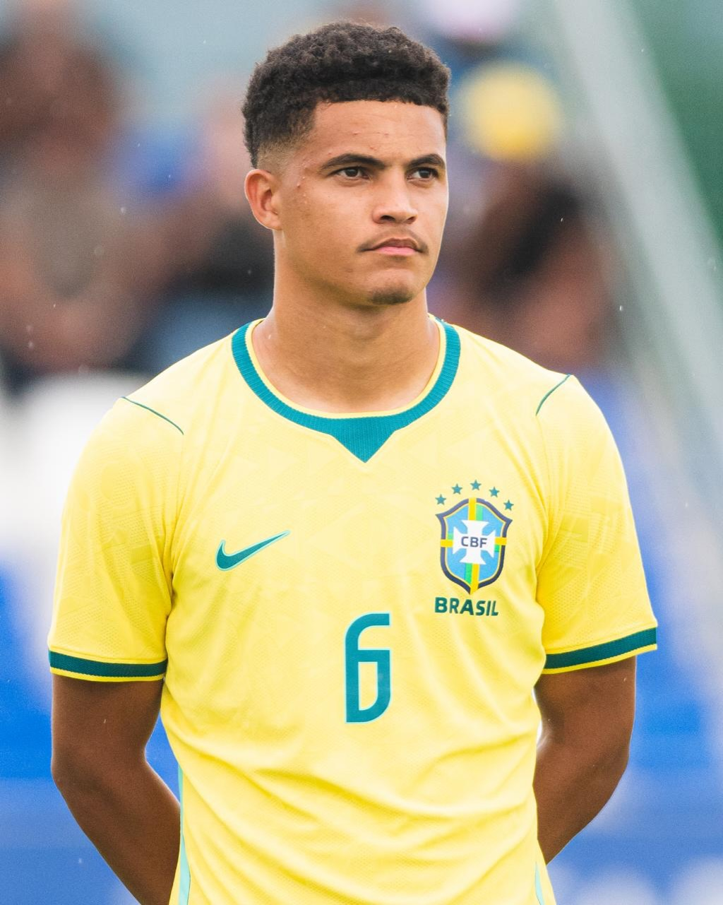
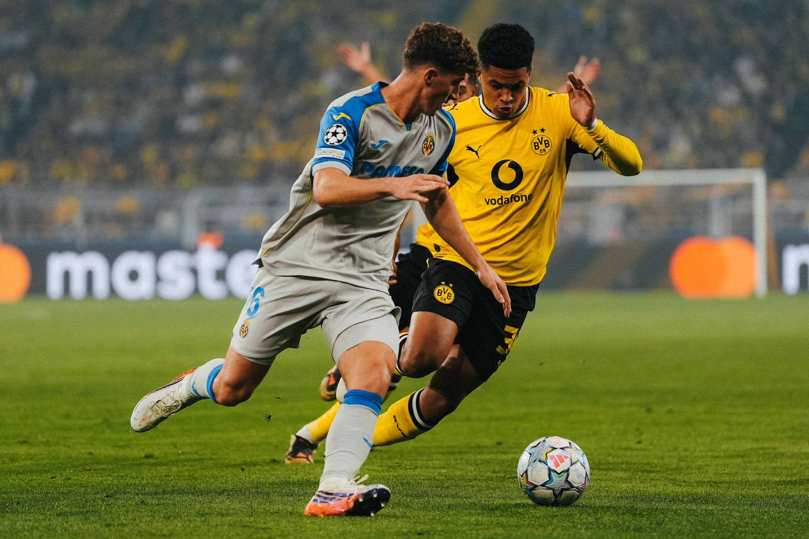
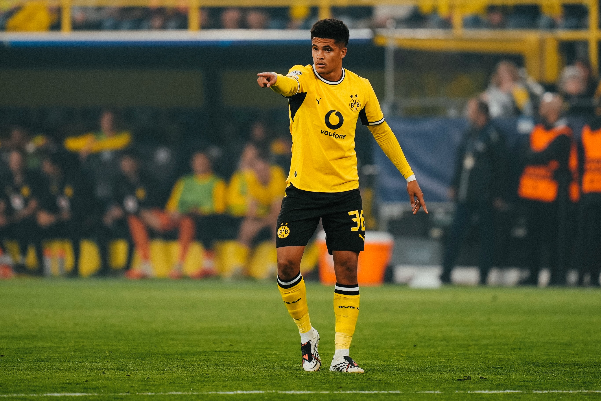
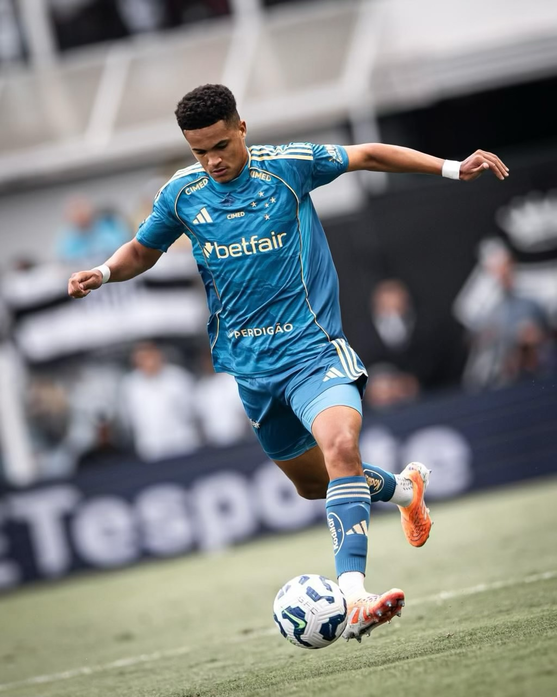
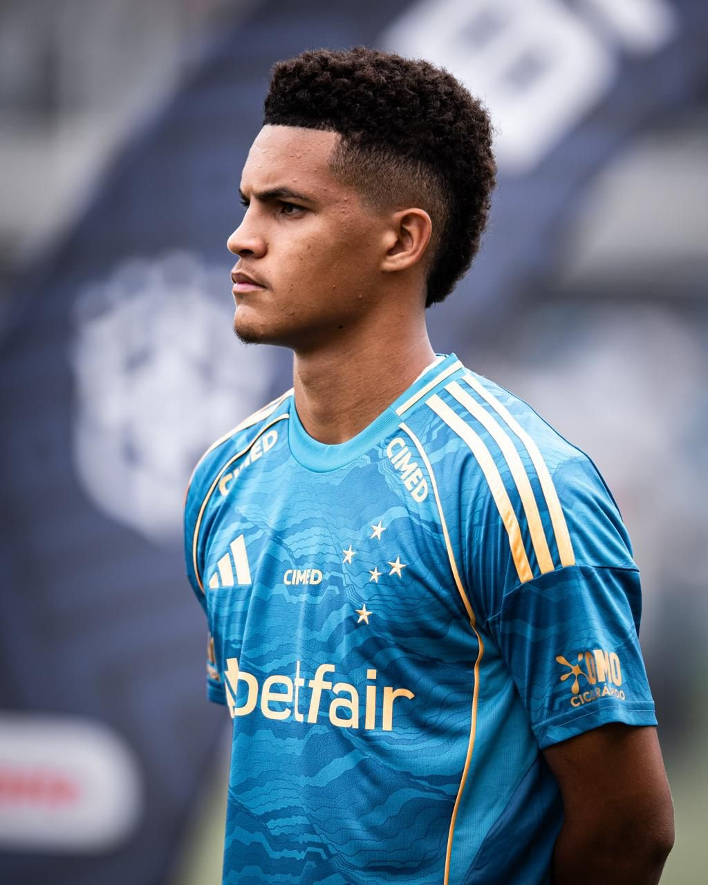
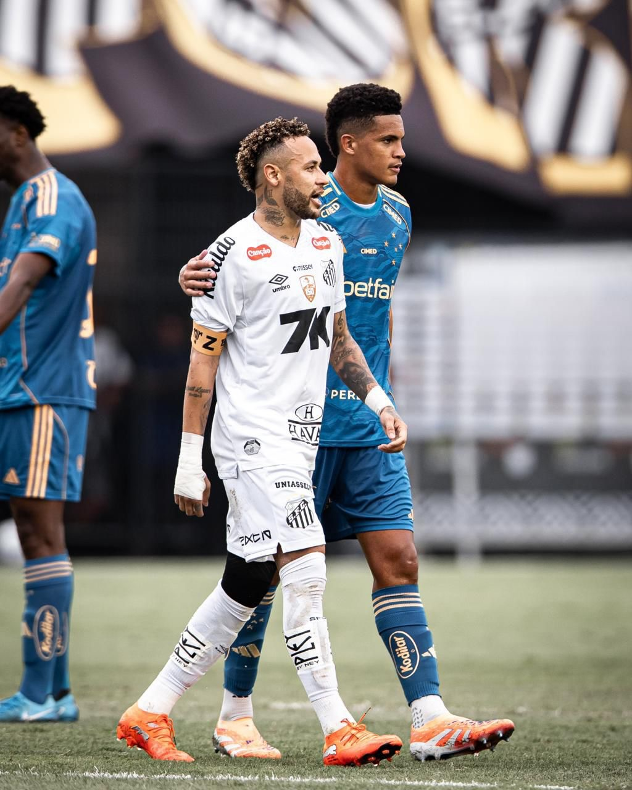

SCROLL
DESDE 2008
MONTANHA — ES

Nascido em 12 de agosto de 2008, na cidade de Montanha, Espírito Santo, Kauã Prates é um dos maiores talentos da nova geração do futebol brasileiro. Com 1,84m de altura e pé canhoto, combina imposição física com habilidade técnica refinada na lateral-esquerda.
Formado nas categorias de base do Cruzeiro, onde chegou em 2019 aos 11 anos, Kauã trilhou uma ascensão meteórica que o levou à Seleção Brasileira e à elite do futebol europeu — o Borussia Dortmund.
Agradeço a Deus por mais um sonho realizado e por me permitir viver um momento tão especial. Estrear com a camisa do Borussia Dortmund é algo que vou guardar para sempre no coração.
Aos 11 anos, Kauã chegou à Toca da Raposa para integrar o sub-11 do Cruzeiro. Sua habilidade técnica e porte físico acima da média chamaram atenção imediatamente, atuando tanto como lateral-esquerdo quanto como zagueiro nas categorias de base.
Em setembro de 2024, aos 16 anos, Kauã assinou seu primeiro contrato profissional com o clube mineiro, consolidando anos de trabalho e dedicação nas categorias de base. A promessa se tornava realidade.
A estreia no time principal veio na Copa Sul-Americana, contra o Mushuc Runa. No Campeonato Brasileiro, foi titular em uma grande atuação contra o Fluminense, mostrando maturidade surpreendente para um jovem de 16 anos.
Peça fundamental da Seleção Brasileira Sub-17, Kauã ajudou o Brasil a conquistar o título do Campeonato Sul-Americano Sub-17 em 2025. Seu desempenho rendeu convocações para o Sub-20, consolidando seu status como uma das maiores promessas de sua geração.
Em fevereiro de 2026, o gigante alemão anunciou a contratação do jovem lateral em uma transferência de aproximadamente €12 milhões. Contrato de longo prazo até 2031. Ao completar 18 anos em agosto, Kauã viajou para Dortmund para vestir a camisa #36 do BVB, recebendo conselhos do lendário Dedê, ex-lateral e ídolo do clube.




